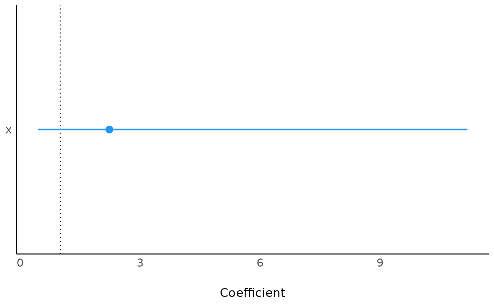

Contains fields storing data and methods to build, process and visualize a regression model. Currently, this class is designed for CoxPH and GLM regression models.
Public fields
dataa
data.tablestoring modeling data.recipean R
formulastoring model formula.termsall terms (covariables, i.e. columns) used for building model.
argsother arguments used for building model.
modela constructed model.
typemodel type (class).
resultmodel result, a object of
parameters_model. Can be converted into data.frame withas.data.frame()ordata.table::as.data.table().forest_datamore detailed data used for plotting forest.
Methods
Method new()
Build a REGModel object.
Arguments
dataa
data.tablestoring modeling data.recipean R
formulaor a list with two elements 'x' and 'y', where 'x' is for covariables and 'y' is for label. See example for detail operation....other parameters passing to corresponding regression model function.
fa length-1 string specifying modeling function or family of
glm(), default is 'coxph'. Other options are members of GLM family, seestats::family(). 'binomial' is logistic, and 'gaussian' is linear.explogical, indicating whether or not to exponentiate the the coefficients.
ciconfidence Interval (CI) level. Default to 0.95 (95%). e.g.
survival::coxph().
Method plot_forest()
plot forest.
Arguments
ref_linereference line, default is
1for HR.xlimlimits of x axis.
...other plot options passing to
forestploter::forest(). Also check https://github.com/adayim/forestploter to see more complex adjustment of the result plot.
Method plot()
print the REGModel$result with default plot methods from see package.
Arguments
...other parameters passing to
plot()insee:::plot.see_parameters_modelfunction.
Examples
library(survival)
test1 <- data.frame(
time = c(4, 3, 1, 1, 2, 2, 3),
status = c(1, 1, 1, 0, 1, 1, 0),
x = c(0, 2, 1, 1, 1, 0, 0),
sex = c(0, 0, 0, 0, 1, 1, 1)
)
test1$sex <- factor(test1$sex)
# --------------
# Build a model
# --------------
# way 1:
mm <- REGModel$new(
test1,
Surv(time, status) ~ x + strata(sex)
)
mm
#> <REGModel> ==========
#>
#> Parameter | Coefficient | SE | 95% CI | z | p
#> -------------------------------------------------------------
#> x | 2.23 | 1.83 | [0.45, 11.18] | 0.98 | 0.329
#>
#> Uncertainty intervals (equal-tailed) and p values (two-tailed) computed using a
#> Wald z-distribution approximation.
#> [coxph] model ==========
as.data.frame(mm$result)
#> Parameter Coefficient SE CI CI_low CI_high z df_error
#> 1 x 2.230706 1.83448 0.95 0.4450758 11.18022 0.9756088 Inf
#> p
#> 1 0.3292583
if (require("see")) mm$plot()
#> Loading required package: see

mm$print() # Same as print(mm)
#> <REGModel> ==========
#>
#> Parameter | Coefficient | SE | 95% CI | z | p
#> -------------------------------------------------------------
#> x | 2.23 | 1.83 | [0.45, 11.18] | 0.98 | 0.329
#>
#> Uncertainty intervals (equal-tailed) and p values (two-tailed) computed using a
#> Wald z-distribution approximation.
#> [coxph] model ==========
# way 2:
mm2 <- REGModel$new(
test1,
recipe = list(
x = c("x", "strata(sex)"),
y = c("time", "status")
)
)
mm2
#> <REGModel> ==========
#>
#> Parameter | Coefficient | SE | 95% CI | z | p
#> -------------------------------------------------------------
#> x | 2.23 | 1.83 | [0.45, 11.18] | 0.98 | 0.329
#>
#> Uncertainty intervals (equal-tailed) and p values (two-tailed) computed using a
#> Wald z-distribution approximation.
#> [coxph] model ==========
# Add other parameters, e.g., weights
# For more, see ?coxph
mm3 <- REGModel$new(
test1,
recipe = list(
x = c("x", "strata(sex)"),
y = c("time", "status")
),
weights = c(1, 1, 1, 2, 2, 2, 3)
)
mm3$args
#> $weights
#> [1] 1 1 1 2 2 2 3
#>
# ----------------------
# Another type of model
# ----------------------
library(stats)
counts <- c(18, 17, 15, 20, 10, 20, 25, 13, 12)
outcome <- gl(3, 1, 9)
treatment <- gl(3, 3)
data <- data.frame(treatment, outcome, counts)
mm4 <- REGModel$new(
data,
counts ~ outcome + treatment,
f = "poisson"
)
mm4
#> <REGModel> ==========
#>
#> Parameter | Log-Mean | SE | 95% CI | z | p
#> --------------------------------------------------------------------
#> (Intercept) | 3.04 | 0.17 | [ 2.70, 3.37] | 17.81 | < .001
#> outcome [2] | -0.45 | 0.20 | [-0.86, -0.06] | -2.25 | 0.025
#> outcome [3] | -0.29 | 0.19 | [-0.68, 0.08] | -1.52 | 0.128
#> treatment [2] | 1.34e-15 | 0.20 | [-0.39, 0.39] | 6.69e-15 | > .999
#> treatment [3] | 1.42e-15 | 0.20 | [-0.39, 0.39] | 7.11e-15 | > .999
#>
#> Uncertainty intervals (profile-likelihood) and p values (two-tailed) computed
#> using a Wald z-distribution approximation.
#> [glm/lm] model ==========
mm4$plot_forest()
#> Never call '$get_forest_data()' before, run with default options to get plotting data
 mm4$get_forest_data()
mm4$plot_forest()
mm4$get_forest_data()
mm4$plot_forest()